Spider-Man's Tangled Web (2001 - 2003)
| Comic Book | Release Date | Cover |
|---|---|---|
| Spider-Man's Tangled Web #1 The Coming of the Thousand | 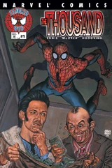 | |
| Spider-Man's Tangled Web #2 The Coming Of The Thousand: Part Two | 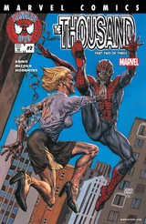 | |
| Spider-Man's Tangled Web #3 The Coming of the Thousand: Part Three | 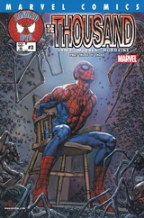 | |
| Spider-Man's Tangled Web #4 Severance Package | 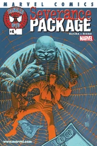 | |
| Spider-Man's Tangled Web #5 Flowers for Rhino Part 1 of 2: Rhinoplasty | 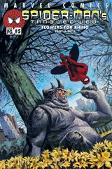 | |
| Spider-Man's Tangled Web #6 Flowers for Rhino Part 2 of 2: Cornocopia | 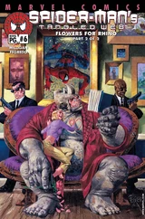 | |
| Spider-Man's Tangled Web #7 Gentlemen's Agreement Part 1 of 3 | 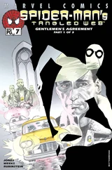 | |
| Spider-Man's Tangled Web #8 Gentlemen's Agreement Part 2 of 3 | 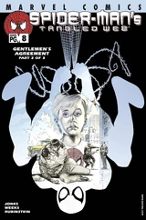 | |
| Spider-Man's Tangled Web #9 Gentlemen's Agreement Part 3 of 3 | 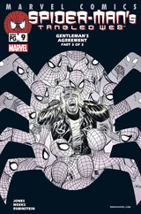 | |
| Spider-Man's Tangled Web #10 Ray of Light | 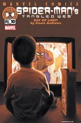 | |
| Spider-Man's Tangled Web #11 Open All Night | 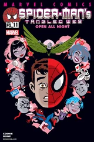 | |
| Spider-Man's Tangled Web #12 I was a teenage Frog-Man | 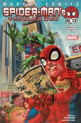 | |
| Spider-Man's Tangled Web #13 Double Shots | 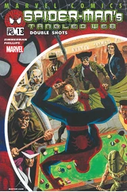 | |
| Spider-Man's Tangled Web #14 The Last Shoot | 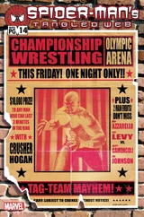 | |
| Spider-Man's Tangled Web #15 The Collaborator | 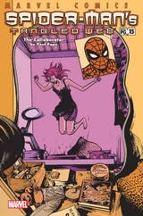 | |
| Spider-Man's Tangled Web #16 Heartbreaker Part 1 of 2 | 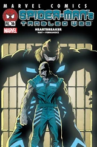 | |
| Spider-Man's Tangled Web #17 Heartbreaker Part 2 of 2 | 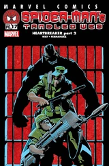 | |
| Spider-Man's Tangled Web #18 Alphabet City | 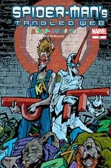 | |
| Spider-Man's Tangled Web #19 Call of the Wild | 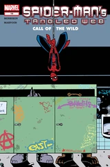 | |
| Spider-Man's Tangled Web #20 Behind the Mustache | 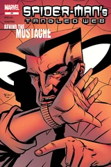 | |
| Spider-Man's Tangled Web #21 t'was the Fight before Xmas | 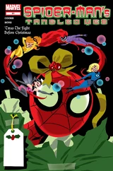 | |
| Spider-Man's Tangled Web #22 The System | 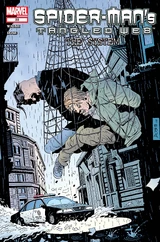 |